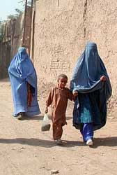

El Islam y la Mujer
Antes del advenimiento del Islam, las mujeres árabes paganas generalmente disfrutaban un estatus respetable en la sociedad; muchas de ellas, incluyendo a Khadija - la primera esposa del profeta del Islam, tenían el derecho de emprender negocios y escoger o rechazar sus esposos en una forma matrilineal; tomaban parte en la mayoría de las actividades de la guerra o de la paz, incluyendo la adoración pública. En el paganismo árabe orientado a las mujeres, las diosas tenían un estatus especial; en la Meca, la diosa femenina Al-Uzza; en Taif, la diosa Al-Lat, y en Medina, la diosa Manat, fueron las deidades más populares, y sus estatuas eran más reverenciadas mientras que la estatua del estricto Alá eran casi despreciadas.
La poesía pagana árabe estaba dedicada principalmente a la belleza y la gracia de sus mujeres, y la gloria de sus valores tribales en la paz y en la guerra. Y sólo prevalecía en una tribu predadora de la Meca la maligna costumbre de enterrar vivas a las hijas. Era altamente inusitado que un hombre de la sociedad árabe preislámica tuviera más de una mujer en su casa; y es bastante seguro que la poligamia fue introducida y fomentada por el profeta después de la revelación del Islam. Las mujeres eran para producir el mayor número posible de musulmanes. Esto resultó al final en la degradación del estatus de la mujer casada en la sociedad islámica. Por doquier las costumbres árabes preislámicas permitían muchas formas suaves de matrimonio en la tradición matrilineal y matrilocal, que le daban libertad y decisión a la mujer como un ser humano completo; sin embargo, las reglas artificiales del nikah Islámico redujeron el matrimonio a una simple esclavitud sexual y social.
El profeta del Islam, antes de ser profeta, se opuso al enterramiento de las hijas vivas recién nacidas; estaba ansioso por trabajar por una mujer y eligió de buena gana casarse con una mujer divorciada. El Islam primitivo continuó con la mayoría de las tradiciones preislámicas; no había hijabs o velos para las mujeres de Medina; y en una fecha tardía, sólo las nueve esposas de profetas estaban restringidas en sus relaciones comerciales ya que los hogares estaban constantemente llenos de visitantes. Sin embargo, las esclavas sexuales de los profetas no tenían restricciones de ese estilo.
De hecho, el velo semitransparente de media cara (hijab) era realmente una costumbre muy antigua que se originó en los tiempos asirios, un símbolo de estatus y una marca de distinción social para la mujer libre. La mujer árabe pagana preislámica de las ciudades, a menudo llevaba el acostumbrado velo semitransparente de media cara, pero las mujeres tribales nunca lo llevaron.
Más tarde, el Islam agregó medidas para “la preservación de la modestia para la mujer” -como bajar sus ojos en público, ocultar sus pechos y la joyería, y cosas similares. Sin embargo, estas restricciones fueron extendidas posteriormente por los seguidores del profeta mucho más lejos de sus intensiones originales, como están expresadas en el Korán, y permanecieron más o menos como una fijación permanente de la vida musulmana desde ese entonces.
Sin embargo y posteriormente, la inseguridad del Islam primitivo se agregó a la exclusión de la mujer, y 100 años después, durante el reinado de Abbasid Calif Harun ur Rashid, las mujeres se convirtieron exclusivamente en juguetes sexuales y máquinas de reproducción; y como mujeres casadas eran sólo sirvientas -simplemente apéndices sociales de los hombres. Más aún, como esclavas sexuales, las mujeres se podían comprar y vender libremente en mercados abiertos de todos los países islámicos, y se podían hipotecar, rentar, o prestar como regalos a los amigos. El mismísimo profeta prestó esclavas sexuales a sus favoritos. No había límite al número de esclavas que uno podía poseer; uno de los compañeros del profeta Hazrat Zubair Ibn ul Arvan, por ejemplo, tenía 1000 esclavos y 1000 esclavas sexuales. El Islam tomó a la mujer como la tierra para el hombre donde depositaría sus semillas.
El profeta mismo tomó parte o guió casi 100 guerras o ataques de pillaje. Después de él, sus seguidores continuaron la ofensa. Los fieros beduinos tribales islámicos con siglos de experiencia en la guerra tribal cruel y sanguinaria probaron ser las tropas de asalto ideales del Islam. Después de Irak, Siria cayó bajo el Imperio Islámico en el 634 EC. Sin importar rendiciones, se llevaron a cabo grandes masacres en muchos sitios; miles de hombres eran asesinados y las mujeres y niños eran vendidos como esclavos; los monasterios eran saqueados, los monjes y pueblerinos eran liquidados y las monjas, violadas. Después de la conquista de Egipto, muchos de sus pueblos fueron pasados por la espada y su población total fue erradicada. Grandes masacres también ocurrieron en Chipre y Norte de África. La provincia romana de Irak, la provincia siria de Irán, y el Irán ya conquistado produjo centenares de miles de esclavos, de esclavas sexuales, y vastas tierras fértiles de estos otrora poderosos y civilizados países, donde la mujer había sido tenida en gran respeto, por ejemplo, el Irak maniqueo, el Egipto faraónico, y las civilizaciones del Norte de África.
Como en Egipto e Irán, dondequiera que las armadas beduinas islámicas conquistadoras fueran, destruían las culturas de las civilizaciones locales e imponían su medievalismo tribal islámico asesinando inmisericordemente a los hombres y degradando a las mujeres a esclavitud sexual perpetua. En pocas palabras, los bárbaros y beduinos tribales islámicos hicieron a las civilizaciones superiores que la rodeaban lo mismo que hicieron los bárbaros romanos a los altamente civilizados griegos de la antigüedad. Mientras tanto, los beduinos islámicos continuaron sus asaltos y secuestraron mujeres europeas para los mercados islámicos de esclavas durante todos estos siglos Islámicos. La conquista de Siria forzó a la conversión de miles de sacerdotes cristianos al Islam, quienes cambiaron su religión pero no su profesión: se convirtieron en los férreos Mullahs Islámicos misóginos y no sólo continuaron su magia y rituales religiosos sino que también continuaron el medievalismo esencialmente cristiano, bajo el Islam.
En resumen, como resultado de estas conquistas, destrucciones e imposición del medievalismo tribal islámico, las sociedades bajo el Imperio Islámico fueron más allá que ninguna otra en su exclusión total de la mujer del poder político y la influencia social. La legislación islámica fue mucho más allá de cualquier cosa que el profeta hubiera soñado originalmente en su religiosidad tribal al robarle a las mujeres su lugar justo en la sociedad y en cuestiones de herencia. Donde el Korán le daba a la mujer el derecho de heredar, los mullahs islámicos inventaron la institución legalizada del Waqf -la base religiosa para excluir a las hijas y sus descendientes de la herencia. Aunque el Korán le da a la mujer el derecho de heredar, ella continua siendo una menor; usualmente sin educación y necesitando un guardián que puede ser el padre, el esposo, o incluso el hijo. De hecho, el estado de la mujer en el Islam está teóricamente exaltado, pero en la práctica es totalmente deplorable.
La multiplicación del número de harems (los sitios de residencia para las esclavas sexuales), institucionalizada finalmente bajo el Califa Al-Walid II, enfatizó la degradación inevitable de la feminidad bajo el Islam. Harun ur Rashid, el Califa Islámico (gobernante) tenía 2000 esclavas sexuales; el Califa Mutwakkal tenía 4000 de ellas; y cada mullah, oficial o soldado del estado Islámico tenía algunos esclavos y esclavas sexuales que pertenecían a las naciones civilizadas conquistadas. Al impedírseles aprender, experimentar o pensar por ellas mismas, no es de extrañarse que difícilmente haya unas pocas mujeres sobresalientes en 1600 años de historia islámica, y aquéllas que por azar o por la fuerza de las costumbres preislámicas antiguas, llegaran a la luz o a los pasillos del poder, eran eliminadas tarde o temprano según las órdenes de algunos mullahs islámicos piadosos y religiosos… de hecho, el antifeminismo violento del Islam ha sido tan nefasto como la quema cristiana de cientos de miles de mujeres europeas por brujería en los siglos XV, XVI y XVII. Los instrumentos de odio hacia la mujer que poseía el Imperio Islámico, los mullahs y los Califas, continuaron promoviendo la degradación de la mujer bajo el sórdido código legal islámico de la Sharia, el sello final sobre el sometimiento total del elemento femenino. La historia moderna del Islam es simplemente la continuación del medievalismo tribal Islámico, sólo es moderna la tecnología, la fraseología y la fachada.
El islam y sus brutalidades
“El subcontinente indio sufrió la humillación y la destrucción bajo el Islam, tal como la sufrió África. El general islámico Mohammad Bin Qasim diezmó las grandiosas civilizaciones budista e hindú. Actuando bajo órdenes de un representante del Califa Islámico, Gobernador Hijaj Bin Yousaf (quien era un enemigo mortal del Hazrat Alí y de la familia del Hazrat Hussein - algunos de los cuales se habían refugiado bajo la protección del monarca budista Rajá Dahir en Sindh), Mohammad Bin Qasim conquistó el reino en el 712 EC. Sus pillos y saqueadores demolieron templos, destrozaron esculturas, saquearon palacios y asesinaron miles de personas. Le tomó tres días a su armada islámica el aniquilar los habitantes de Debal, y sus mujeres y niños fueron capturados para la esclavitud. Después perdonó a muchos prisioneros y trató de establecer una regla de ley justa, lo que enfureció al muy islámico y asesino gobernador Hijaj Bin Yousaf; por tanto, Qasim volvió otra vez a la barbaridad Islámica y masacró entre seis mil y dieciseis mil personas en Brahiminabad, sus mujeres y sus niños fueron enviados a los mercados islámicos de esclavos en Arabia.
Este fue el comienzo de la destrucción de la civilización India clásica de la antigüedad, y el comienzo de la era medieval de oscurantismo islámico en India. El siglo XI fue testigo de otro asesino y saqueador islámico, el Sultán Mahmud Ghaznavi, un agente del Califa Islámico, quien arruinò totalmente la grandiosa civilización india y saqueó y robo la mayoría de sus bienes. Cincuenta mil hindúes fueron masacrados en solo uno de sus ataques en Somnath; invadió India más de 17 veces. Miles de hombres y mujeres hindúes fueron enviados a los mercados afganos islámicos de esclavos. Las altamente culturizadas y civilizadas hijas de las familias hindúes nobles fueron vendidas a los iletrados, incultos y bárbaros afganos por el equivalente de sólo un Franco (Libra/Dólar) cada una. Después de que cada musulmán afgano tuviera cuatro esposas, hubo cantidad de superavit de mujeres; a esto, esos malignos mullahs islámicos respondieron con una ingeniosa traducción de los versos coránicos, probando que Alá permitía que cada mujer se casara con 18 mujeres al tiempo, junto con un número ilimitado de mujeres que hacían de concubinas. Pronto, los nuevos instrumentos militares del Califa Islámico, los Turcos y Mongoles, siguieron diezmando a la capturada ciudad de Delhi y convirtieron la totalidad de India en un enorme campo de esclavos al aire libre. El Sultán Firoze Shah Tughlaq - un legislador turco e islámico - tenía 100.000 esclavos y miles de esclavas sexuales en su harem; el piadoso Mongol Islámico, el Emperador Shahjenan, tenía 15.000 esclavas y concubinas en su harem personal. De hecho, los invasores y dictadores turcos islámicos hicieron en India lo mismo que hicieron en Armenia - la totalidad de las razas de los pueblos fueron exterminados. (Sin embargo, se le debe dar crédito al Emperador Mongol agnóstico, humanista, y de mente secular, Akbar el Grande, quien se rehusó a recibir el título de “Rey de los Musulmanes”, y prefirió ser llamado “la sombra de Dios”- porque, según declaró (de acuerdo con la mentalidad y lenguaje de su era), su dios era la deidad benéfica y protectora de todos los hindúes, musulmanes y otras razas de humanos y criaturas semejantes. El renunció a su fe en el Islam y trató de usar su genio en crear una religión pluralista que comprendiera las tradiciones de todas las religiones e ideologías prevalecientes en la India. Incluso invitó a los Sacerdotes Jesuitas cristianos para que desde Goa, llegaran a su palacio de discusión ideológica, pero no se pudo tragar el mito infantil de Jesús como Hijo de Dios).
El Imperio Islamico medieval del Califato Turco de Osmania desapareció después de la derrota del Eje en la Primera Guerra Mundial, con el ascenso del héroe secular turco Mustafá Kemal Pasha. Sin embargo, pronto se metamorfoseó en el Imperio espiritual islámico saudita moderno. Vale anotar que mientras que el muy cristiano Sacro Imperio Británico Romano del Occidente requería destacamentos armados para controlar los cuerpos de efectivos en todas sus colonias, el Imperio teocrático espiritual Islámico Saudí del oriente dependía de las permanentes armadas de clérigos -Mullahs e Imanes- estacionados en las mezquitas para controlar las mentes de sus hombres -el control social, cultural espiritual y psicológico. Es cierto que el Islam desmanteló las antiguas lealtades tribales árabes y algunos de sus tabúes y tradiciones; sin embargo, creó una nueva tribu en el nombre del Islam con el profeta mismo como líder, y su familia y tribu -Hashmis y Quresh- adquirieron un estatus elevado y sagrado y reemplazaron a la tribu medieval arcaica a la manera de una nueva tribu teocrática. Sin embargo, esencialmente continuaron muchos de los antiguos ritos paganos de adoración, al igual que muchos de sus tabúes y tradiciones. Las lealtades tribales de sangre fueron reemplazadas con las nuevas lealtades religiosas tribales. En el nivel intelectual, el Islam es simplemente la continuación de la Jahiliya (ignorancia) medieval con los ropajes sagrados del Islam - la Jahilia Islámica (la ignorancia medieval islámica). El Islam moderno es de hecho, simplemente una continuación de la ignorancia tribal y la actitud mental retrógrada de carácter medieval.
Desde la llegada del petróleo saudí, los petrodólares comenzaron a respaldar a los movimientos extremistas islámicos alrededor de todo el mundo y continúan haciéndolo. Los petrodólares saudíes han creado miles de centros Islámicos para el control y propaganda social y política a lo largo de todo el mundo -las mezquitas; 1000 mezquitas fueron construidas en los Estados Unidos únicamente, sólo en los últimos años. El lavado cerebral y la propaganda política islámica continúan en estas mezquitas y madrasas -las escuelas religiosas-, al igual que en los periódicos, magazines, programas de radio y televisión, todos islámicos. Todo tipo de terrorismo extremista y fundamentalismo islámico emana y fluye del “Núcleo del mal- el epicentro del horrible Islamismo- los saudíes”. Porque el Alá de los saudíes hace que sea obligatoria la sumisión de todos los humanos al Islam. Aquellos que se rehúsen a someterse a Alá, o que difieran de la versión saudita del Islam son llamados “el partido de Satán”, y deben ser eliminados por los saudíes o por sus zombies pagados, de cerebro lavado- los musulmanes- llamados “el partido de Alá”. Arabia Saudita es de hecho el peor ejemplo de medievalismo islámico y de retrogradación mental y social. La esclavitud fue legal en Arabia Saudita hasta 1960 cuando fue oficialmente abolida ¡a raíz de una petición personal del Presidente Estadounidense no musulmán John Fitzgerald Kennedy! Sin embargo, la esclavitud continúa con otros nombres nuevos: las sirvientas domésticas extranjeras -la propiedad privada de los bárbaros beduinos Islámicos. Los petrodólares saudíes continúan respaldando a los mullahs extremistas y fundamentalistas, y continua atrayendo los estados islámicos hacia la barbarie de las leyes Sharia Islámicas medievales, y los saudíes continúan difundiendo el terrorismo islámico de los mullahs y el totalitarismo teocrático Islámico por todo el mundo.
Irán, básicamente una colonia espiritual islámica, es el abuelo del terrorismo islámico Chiíta, (los Saudíes Sunnitas son una secta islámica como los cristianos católicos mientras que los chiítas son como los cristianos protestantes). Este gobierno de Alá en Irán es actualmente el más maligno estado religioso. Tortura, asesinato y absolutismo islámico -una versión islámica del Nazismo de Hitler, del comunismo estalinista, y del fascismo de Mussolini combinados. ¡Hubo más de 5195 ejecuciones políticas y religiosas sólo en 1983! Hace pocos años, se presentó un proyecto de ley en el Parlamento Iraní solicitando que, de acuerdo con la tradición del profeta del Islam, ¡se permitiera el matrimonio con niñas de 9 años de edad! Tampoco se permiten los derechos humanos en el Irán Islámico, donde, de acuerdo con la Radio Irán en idioma inglés, el Espíritu Sagrado del iman Khomeni sobrevuela Irán todo el tiempo. Se han mandado mujeres a la horca por sospecha de crimen sexual. Incluso vírgenes demostradas han sido enviadas a la horca, sin embargo, son colgadas sólo después de ser violadas, ya que el Islam Iraní no permite ahorcar vírgenes. Irán ha usado el dinero de su petróleo para fomentar revoluciones islámicas a lo largo de todo el mundo, y continua haciéndolo.
Algeria, conocida por su guerra civil islámica, continúa sus horrores islámicos. El absolutismo y totalistarismo islámico se impone con fusiles y asesinatos, in interés de la religión del Islam. Los hombres se asesinan con frecuencia por sus crímenes religioso-políticos, mientras que las mujeres son asesinadas sólo por el crimen de ser mujer en un país islámico. Miles son violadas islámicamente y más de 500 fueron asesinadas únicamente en 1993. Las mujeres son asesinadas por no llevar el hijab (velo) o por rehusarse a hacerlo cuando se las obliga, por rehusarse a comprometerse según el estilo de matrimonio temporal iraní, por estar casada con hombres extranjeros, y por trabajar y vivir solas. Ha habido víctimas desde 9 años hasta 69 años de edad. Las mujeres a menudo son violadas y torturadas antes de ser asesinadas. Miles se encuentran a sí mismas en prisión por razones ilegítimas. Vale la pena mencionar que las mujeres tenían un estatus respetable en la sociedad antes de la conquista de Algeria por el Islam.
Los egipcios, herederos de las grandiosas civilizaciones faraónica y alejandrina, continúa padeciendo el mal crónico del Islam. Reconocido por las miserias del hijab y de la mutilación genital femenina, Egipto también es un centro de prostitución infantil para los beduinos islámicos saudíes. En Egipto, cuatro de cada cinco mujeres son forzadas a llevar algún tipo de hijab. La mutilación genital femenina es muy común; hasta un 73% en el Cairo, y 95% en las áreas rurales. Se reportó que en 1995, un shaikh (dignidad religiosa) de la Universidad Al-Azhar de el Cairo, emitió una fatwa (un decreto religioso), que anunciaba que el procedimiento de mutilación genital femenina era “una práctica loable que honra a las mujeres”, y que era un deber religioso tan importante como orarle a Alá.
Sudán tuvo una larga historia de conquista y represión islámicas. El totalitarismo y la barbarie continúan hasta este momento. Actualmente, Sudán fue brutalizado por el fascismo Islámico del General Numeri, respaldado por los saudíes. En 1992, se emitió una fatwa que justificaba las masacres militares contra los no musulmanes. La barbarie y genocidios islámicos continúan en Darfur hasta hoy día.
La armada islámica de Indonesia cometió un asesinato en masa de 200.000 no musulmanes de Timor Oriental antes de que dicho país consiguiera su independencia. Ahora se conoce el país por su religiosidad extrema, su corrupción, sus problemas ento-religiosos, y el extremismo islámico.
Pakistán, un laboratorio experimental del Islam, se ha convertido en un horror. No obstante los centenares de miles de violaciones, secuestros y asesinatos bajo la mirada aguda de la mismísima administración cristiana del Santo Imperio Británico Romano en la época de la división religiosa del subcontinente indio en 1947 por el Imperio Británico Cristiano, cuando medio millón de personas fue forzado a emigrar, Pakistán nunca ha hecho ningún avance hacia la civilización. Pakistán es un centro de fundamentalismo, extremismo, y terrorismo islámicos. La mismísima armada islámica de Pakistán invadió su provincia de Pakistán Oriental en 1971, asesinando cientos de miles de musulmanes y no musulmanes bengalíes, y violando medio millón de mujeres de 9 a 69 años de edad, en su intento de crear una raza mitad Pakistaní, mitad Bengalí, que sería leal al Islam y a Pakistán. En 1974, el ejército Pakistaní invadió su provincia de Baluchistán, con similares calamidades como resultado. En 1980, el General Islamista Zia ul Haq forzó más islamización bajo la presión saudita para que se introdujera la Sharia islámica tribal y medieval. Además de las oraciones públicas obligatorias, hubo leyes islámicas brutales que penalizaban actos sexuales muy naturales, que también penalizaban la supuesta blasfemia: la represiva Ordenanza Hudood y las infames leyes de Blasfemia. Miles de mujeres inocentes continúan sufriendo bajo estas y otras leyes islámicas fascistas por simples rumores. Las mujeres violadas han sido enviadas a la horca por el crimen de haber sido violadas. (La Sharia islámica es el único sistema de ley que castiga a las víctimas: Fatemollah). El estado Pakistaní ha probado ser un instrumento obediente y siniestro en servicio del terrorismo y fascismo islámico de los mullahs. Pakistán creó el odiado Talibán afgano y muchas otras organizaciones similares en Afganistán. Organizaciones similares continuan floreciendo en Pakistán y siguen tratando de crear un estado islámico fascista y totalitario. A pesar de fuertes pronunciamientos de lucha en contra del terrorismo islámico, el mal continúa floreciendo. Sin duda alguna, Pakistán es una fuente principal de suministros para el terrorismo Iraquí. El comercio de drogas ilícitas continúa bajo la bendición de los mullahs islámicos y del ISI (La Inteligencia Militar Islámica). También hay centros de prostitución islámica en cada ciudad islámica del Pakistán Islámico, donde se obliga a sufrir a las secuestradas y las mujeres no islámicas. Los intelectuales seculares, liberales y racionalistas continúan sufriendo en Pakistán, como las víctimas de la infame Inquisición Cristiana de la Europa medieval. Así como las iglesias cristianas quemaban herejes, los mullahs islámicos los condenan por blasfemia.

La vigilancia eterna es el precio de la civilización
Mientras el fundamentalismo, la superstición, la ignorancia, la falta de derechos humanos, las mutilaciones genitales femeninas, la reclusión forzada de la mujer dentro de sus casas y sus hijabs; el extremismo religioso, el fundamentalismo, los atentados suicidas con bombas, y el terrorismo islámico continúan siendo los mayores logros de los estados y sociedades musulmanes que están bajo la influencia del Imperio Espiritual Islámico Saudí de los petrodólares, o del área de influencia iraní-chiíta bajo el dinero chiíta obtenido del petróleo; ya es tiempo de que el mundo civilizado despierte del estupor del multiculturalismo y de la tolerancia ciega ante la intolerancia organizada; porque la enfermedad ya se está diseminando aquí mismo. Muchos de los actos de los estados y sociedades islámicas, de sus organizaciones e individuos, son bárbaros y medievales; la decapitación de rehenes inocentes, las penas de muerte y asesinatos por razones religiosas; la cercenación de manos y pies; la lapidación hasta la muerte a mujeres por haber sido violadas o por acusaciones de relaciones sexuales naturales; asesinato por honor basado en simples sospechas, hombres-bomba y actos de terrorismo; estos son los indicativos de una enfermedad profundamente arraigada. El asesinato en el nombre de un misericordioso Alá es pura hipocresía.
El surgimiento del Islam extremista patrocinado por saudíes es un peligro a la civilización en todo el mundo. Todos los musulmanes extremistas son terroristas potenciales y soldados de Alá. No debe haber tolerancia para esta intolerancia organizada religiosamente en contra del liberalismo, los derechos humanos, y el estatus de igualdad de la mujer, al igual que otras manifestaciones de nuestra civilización. A los musulmanes en sociedades democráticas y civilizadas se les debería exigir que juraran lealtad al estado y a la democracia. El derecho político al voto para aquellos cuya lealtad política se encuentra en algún desierto lejano no sólo es dañino sino suicida para el estado, al igual que para la ideología y el sistema de la democracia misma. ¿Derecho político a votar por aquéllos que desean destruir el sistema de la democracia misma? Piénsenlo bien, Damas y Caballeros.
No hay lugar para el optimismo por un Islam liberal. Casi todos los estados Islámicos han fallado al apreciar los derechos humanos básicos de su gente, sus mujeres y sus minorías. Los saudíes y los emiratos son los peores transgresores y padrinos financieros del fundamentalismo, extremismos y retrogradación islámica dondequiera la haya. Pakistán, por ejemplo, después de suplir a Irán y a Korea con secretos nuclerares, continúa ofreciendo la peligrosa tecnología; Vietnam y Brasil son los nuevos compradores. El terrorista nuclear Dr. Abdul Qadir Kahn está a salvo, bien protegido y patrocinado por el estado de Pakistán, con total impunidad, por supuesto.
¡Escuchad, gente civilizada! Ayer rehusáistes reconocer los peligros inherentes en el ascenso de las ideologías Nazi Cristiana y Comunista. Ayer respaldasteis a los Talibanes Islámicos sin importar que hubieran aplastado bajo sus pies los derechos de sus mujeres. Vuestro rechazo a confrontar al Islam militante de hoy día podría costarnos algo mucho más valioso que nuestras propias vidas - nuestro apreciado logro- nuestra civilización. Las creencias tienen consecuencias - lo fundamental del Islam para la retrogradación mental, social, intelectual y cultural; las ofensas organizadas contra las mujeres y las minorías; el fundamentalismo, extremismo y terrorismo moderno son imposibles de negar. “Religiones de paz y tolerancia” son sólo palabras vacías.
¡El Islam es un crimen organizado contra la humanidad!
Younus Shaikh nació en 1955. Él es doctor médico y conferenciante en una universidad médica en Islamabad, Pakistán. El Dr. Shaikh es una activista del racionalismo en su país y colabora con la Asociación Racionalista India desde 1992, y preside la organización racionalista de Pakistán, “La Ilustración”, la cual ayudó a fundar. Su trabajo entusiasta en medio de tanto osurantismo lo ha colocado bajo una condena a muerte por blasfemias contra el profeta Mahoma, al haber afirmado que Mahoma no se hizo musulmán hasta la edad de 40 años y que sus padres no eran musulmanes. El Dr. Shaikh fue sentenciado a la pena capital bajo el cargo de blasfemia en Pakistán, y fue exonerado más tarde en su apelación en la Corte Suprema.
Volver a la sección Sociedad y religión
Comentarios
Comments powered by Disqus